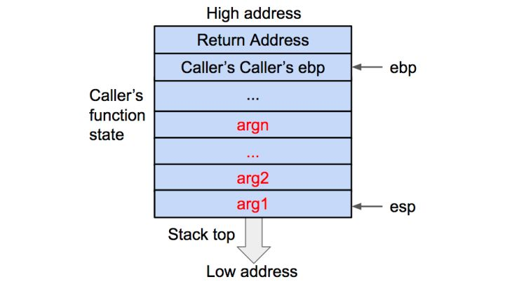
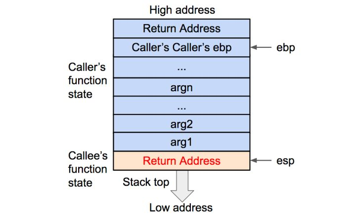
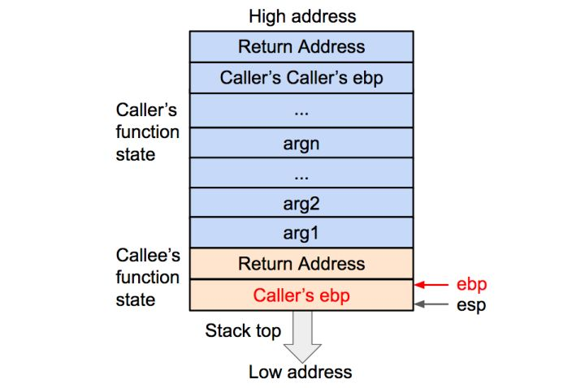
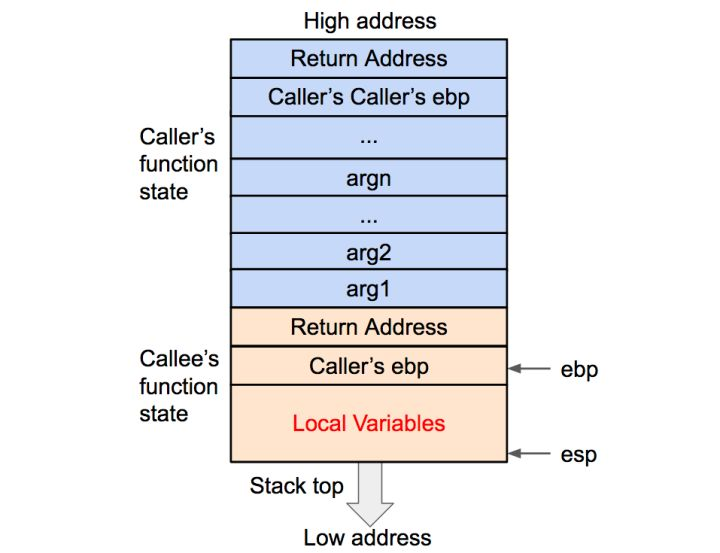
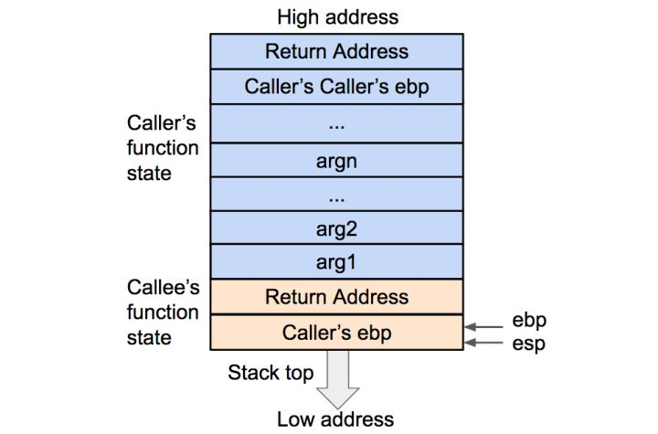
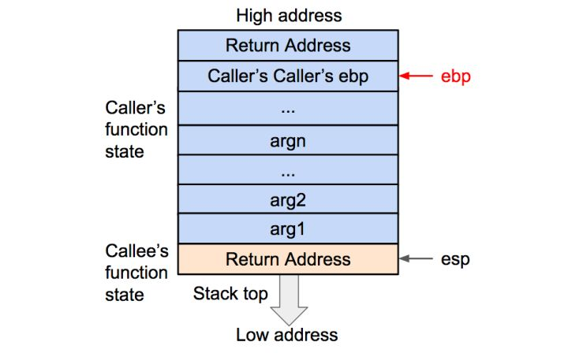
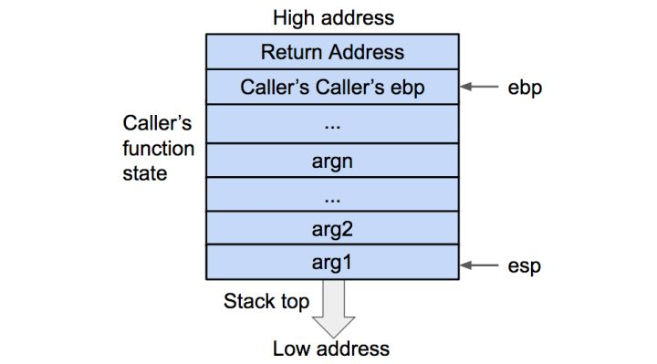
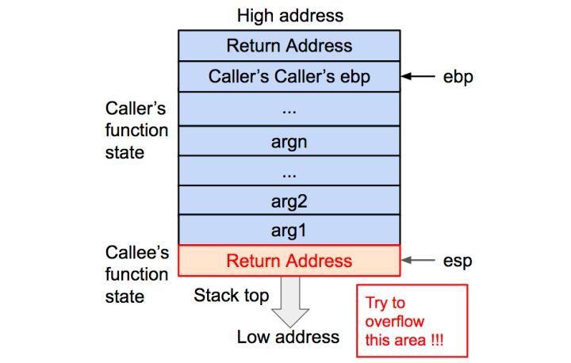
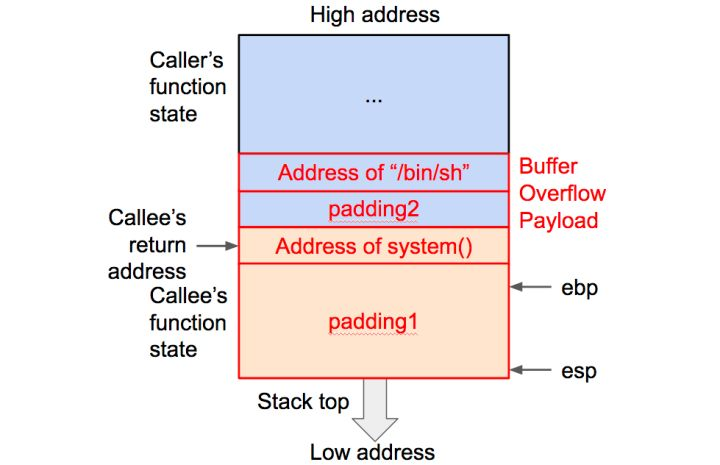
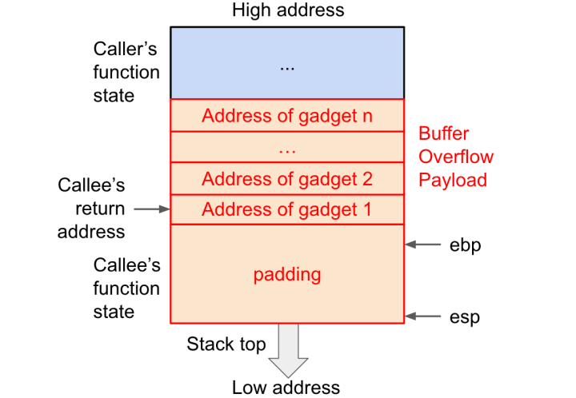

根据不同的操作系统，一个进程可能被分配到不同内存区域中执行，但是不管什么样的系统，什么样的计算机结构，进程使用的内存可以按照功能分为4个部分：
- 代码区：可执行指令
- 数据区：用于存储全局变量
- 堆区：进程可以在堆区动态的请求一定大小内存，并在用完之后归还给堆区。动态分布和回收是堆区的特点
- 栈区：用于动态的存储函数之间的调用关系，以保证被调用函数返回时恢复到母函数中继续执行
程序中使用的缓冲区可以在堆区、栈区、数据区，不同地方的缓冲区利用方式不同。
内存中的栈区指的就是系统栈，由系统自动维护。
栈时FILO结构，所以栈顶指的是最下方，底部是最上方。
- %esp 指向栈的顶部（栈指针寄存器，存放一个指针，永远指向系统栈最上面栈帧的栈顶)
- %ebp 指向栈的底部
- %eip 用来存储即将执行的程序指令的地址
- Frame Pointer(FP) Or Base Pointer(BP), Stack Pointer(SP)
- 函数栈帧：ESP和EBP之间内存空间为当前栈帧
32位x86架构下的通用寄存器包括一般寄存器（eax、ebx、ecx、edx），索引寄存器（esi、edi)，以及堆栈指针寄存器(esp,ebp)
- eax: 累加寄存器(Accumulator),用以进行算数运算和返回函数结果等。
- ebx: 被称为基址寄存器（Base），在内存寻址的时候用来存放基地址。
- exc: 被称为计数寄存器(Counter)，用以在循环中计数。
- edx: 被称为数据寄存器(Data)，常配合eax一起存放运算结果等数据。
栈操作（在32位下)：
- push（压栈） push sth -> [esp]=sth, esp=esp-4
- pop （出栈） pop sth -> sth=[esp], esp=esp+4
32位x86家狗下的汇编语言有Intel和AT&T两种格式，主要差别如下：
Intel格式，寄存器和数值前无符号:
指令名称 目标操作数DST, 源操作数SRC
AT&T格式， 寄存器名称前加"%", 数值前加"$"
指令名称 源操作数SRC， 目标操作数DST
栈内存结构:
- LEA: 取地址指令，将MEM的地址存至REG，格式为
lea REG, MEM;
- ADD/SUB: 加/减指令， 将运算结果存至DST, 格式
ADD/SUB DST, SRC;
- RET: 返回指令，操作将栈顶数据弹出至eip。将返回地址出栈，并跳转到返回地址.它就是将栈顶保存的数据出栈，然后跳转到这个数字指向的空间。
RET;
-
RET: pops the return address off the stack and returns control to that location.
-
CALL: pushes the return address onto the return and transfers control to a procedure.
函数调用栈在内存中从高地址向低地址生长，所以栈顶对应的内存地址在压栈时变小，退栈时变大。
函数调用大致包含以下步骤：
参数入栈（一般是逆序入栈）: 具体包括：
压入需要保存的寄存器，通常这些寄存器包括eax，ecx，edx等
返回地址入栈
代码区跳转
栈帧调整：具体包括
保存当前栈帧状态值（push ebp）
将当前栈帧切换到新栈帧（move ebp,esp）
给新栈帧分配空间（把ESP减去所需空间大小，抬高栈顶）
相关指令：
- Call func -> push pc, jmp func
- Leave -> mov esp,ebp pop ebp
- Ret -> pop pc
函数返回大致包含如下步骤：
保存返回值（通常保存在EAX中）
弹出当前栈帧，恢复上一个栈帧：具体包括
在堆栈平衡的基础上给ESP加上栈帧的大小，降低栈顶，回收当前栈空间
将当前栈帧底部保存的前栈帧EBP值弹入EBP，恢复出上一个栈帧
将函数返回地址弹给EIP
跳转
Stack is collections of stack frame, each function in program create a new fram in stack and frame pointer keep the current location of frame which is executing
我是流程图
0x01 被调用函数参数入栈
变化的核心就是将调用函数(caller)的状态保存起来，同时创建被调用函数（callee）的状态。
首先将被调用函数（callee）的参数按照逆序依次压入栈内。如果被调用函数（callee）不需要参数，则没有这一步骤。

0x02 调用函数返回地址入栈
然后将调用函数（caller）进行调用之后的下一条指令作为返回地址入栈，这样调用函数（caller)的EIP指令信息得以保存。

0x03 调用函数ebp入栈
再将当前的ebp寄存器的值（也就是调用函数的基地址）压入栈内，并将当前ebp的值，更新位当前栈顶的位置。这样调用函数（caller）的ebp(基地址）信息得以保存，同时，ebp被更新位被调用函数（callee)的基地址。

0x04 被调用函数（callee）局部变量等入栈

在压栈的过程中，esp寄存器的值不断减小，对应栈从内存的高地址向低地址生长），压入栈内的数据包括（调用参数，返回地址，调用函数的基地址以及局部变量）
0x05 调用结束时候
首先被调用函数的局部变量会从栈内直接弹出，栈顶指向被调用函数(callee)的基地址：

然后将基地址（ebp）内存储的调用（caller)函数的基地址从栈内弹出，并保存到ebp寄存器内。这样调用函数(caller)的ebp(基地址)信息得以恢复。此时栈顶指向返回地址。

0x06 返回地址弹出
再将返回地址从栈内弹出，并存到eip寄存器内。这样调用函数（caller)的eip(指令)信息得以恢复。

0x07 溢出
在函数正在执行内部指令的过程中，我们无法拿到程序的控制权，只有在发生函数调用或者结束函数调用时，程序的控制权会在函数状态之间发生跳转。控制程序执行指令最关键的寄存器就是eip，所以目标就是让eip载入攻击指令的地址。
如果要eip指向攻击指令，首先在退栈的过程中，返回地址会被传给eip，我们只需要让溢出数据用攻击指令的地址来覆盖返回地址即可。

让eip指向攻击指令，有这四种技术:
- 修改返回地址，让其指向溢出数据中的一段指令(shellcode)
- 修改返回地址，让其指向内存中已有的某个函数(return2libc)
- 修改返回地址，让其指向内存中已有的一段指令(ROP)
- 修改某个被调用函数的地址，让其指向另外一个函数(hijack GOT)
在上面几个流程图里面，可以看到参数与局部变量的分界线为EBP的值。

在上面方法中，生效的前提是在函数调用栈上的数据(shellcode）要有可执行权限（另外一个前提是上面提到的关闭内存布局随机化）。很多操作系统会关闭函数调用栈的可执行权限，这样shellcode的方法就失效了。不过可以尝试使用内存中已有指令或函数，包括return2libc和ROP两种方法。
Return2libc
在内存中确定某个函数的地址，并用其覆盖掉返回地址。用于libc动态库被广泛使用，所以有很大概率在内存中找到该动态库。同时由于该库包含一些系统级的函数(比如system()等)。鉴于要执行的函数可能需要参数，比如调用system()函数打开shell完整形式为system("/bin/sh")，所以溢出数据需要包括必要的参数。
payload: padding1 + address of system() + padding2 + address of “/bin/sh”

address of system()是system()在内存中的地址，用来覆盖返回地址。padding2出的数据长度为4（32位机），对应调用system()时的返回地址。因为我们这里只需要打开shell就可以，不关心shell退出之后的行为，所以padding2内容可以随意填充。address of "/bin/sh"时字符串"/bin/sh"在内存中的地址，作为传给system()的参数.
Shellcode
-
shellcode中不能包含空格字符(
\x10,\x0a,\x0b,\x0c,\x20),否则shellcode会被截断。 -
由于shellcode被加载到栈上的位置不是固定的，因此要求shellcode被加载到任意位置都能执行，也就是说shellcode中尽量使用相对寻址。
ROP (Return Oriented Programming)
有时候目标函数在内存中无法找到，有时候目标操作并没有特定的函数可以完美适配。这时需要在内存中寻找多个指令片段，拼凑一系列操作来达成目的。假如要执行某段指令（我们将其称为"gadget"，小工具），溢出的数据应以下方式构造。如果想执行若干指令，需要每个gadget执行完毕之后交给下一额gadget，所以dadget的最后一步指令应该是RET，这样，程序的控制权(eip)才可以切换。所以这种技术被称为返回导向编程（Return Oriented Programming)。要执行多个gadget，溢出数据应该如下构造：
payload: padding + address of gadget 1 + address of gadget 2 + ...... + address of gadget n
这样的构造下，被调用函数返回会跳转执行gadget 1，执行完毕gadget的RET指令会将此时栈顶的数据（也就是gadget 2的地址）弹出到eip，程序继续执行gadget2，以此类推。

栈溢出要实现什么样的效果:
ROP常见的拼凑效果是实现一次系统调用，Linux系统下对应的汇编指令是int 0x80。执行这条指令时，被调用函数的编号存入eax，调用参数按照顺序依次存入ebx,ecx,edx,esi,edi中。
用exec系统调用打开一个shell终端需要的参数和指令如下:
mov rax, 0x3b ; system call number, 0x3b for sys_exec
mov rdi, PROG ; char *prog (program path)
mov rsi, 0 ; char **agcv
mov rdx, 0 ; char **env
syscall
PROG: DB "/bin/sh", 0
rax为系统调用编码，rdi为字符串指针，指向可执行程序的完整路径，rsi和rdx都是字符串指针数组，保存了参数列表和环境变量。
溢出保护
第一层是编译器层面，例如gcc的stack protector, vc的gs 第二层是操作系统层面的DEP, aslr,safeseh,sehop等
0x01 金丝雀
gcc在编译的时候会自动插入一个随机的cookie，也叫做金丝雀值（历史上用金丝雀来检查煤矿中是否含有有毒气体），保存在ebp-8字节的位置，函数每次调用完成将返回地址交给eip之前会检查cookie是否被改写，如果被改写就触发异常，程序停止执行。
缺点: 开销太大，每个函数都要增加5条指令。另外只能保护函数的返回地址，无法保护jmp、call指令的跳转地址。在gcc4.9版本中默认关闭栈保护机制。
0x02 NX
数据执行保护(Data Execution Prevention)，在内存上严格将代码和数据进行区分，防止数据当作代码执行。从sp2开始作为一项安全机制引入，延续到2003、2008、win7。
DEP会将值暴汗内存数据的区域标记为NX(不可执行),当我们控制程序执行流程跳到shellcode的时候，触发异常。
可以将shellcode的地址写成第三发dll的导出函数，例如system启动shell
ROP可以绕过DEP。
0x03 ASLR
ASLR(Address space layout randomization)地址空间布局随机化，在vista之后的系统实现。
- 用第三方经过aslr的dll
- 利用aslr的特性：
aslr只对高位地址随机，例如0x12345678，每次重启低地址5678是不变的，只有高地址1234会随机为别的数值，在小端机中。低位地址在内存低位，高位地址在内存高位。也就是说，在不溢出缓冲区就能放下shellcode的情况下，将数据覆盖到返回地址的低位地址就可以。
- https://www.geego.com.tw/technical-discussion-forum/tech-tips-buffer-overflow-stack-frame-%E6%95%99%E5%AD%B8-%E7%89%A9%E4%BB%B6/
- http://bestwing.me/2017/03/18/stack-overflow-one/
- https://zhuanlan.zhihu.com/p/25816426
- https://www.jianshu.com/p/47d484b9227e
- https://github.com/liuxigu/liuxigu.github.io/blob/master/1.code/2016-03-24-overflow-seh.html